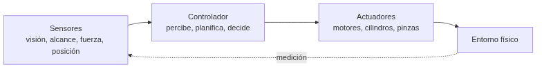
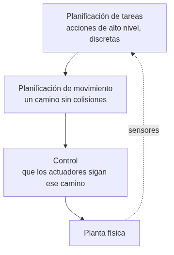
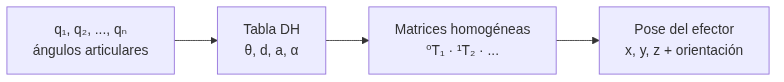
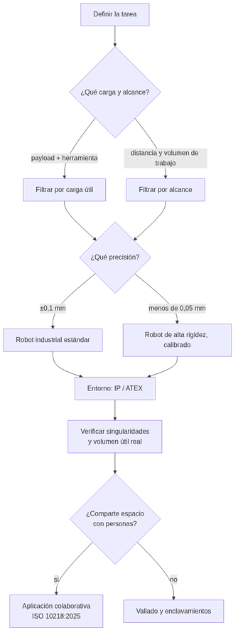
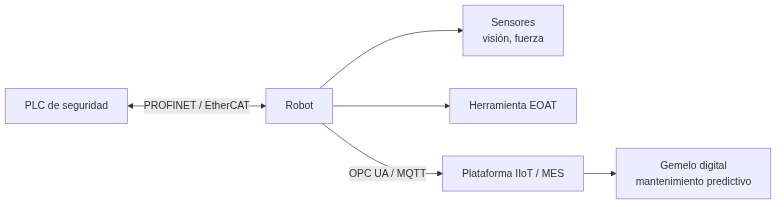

UD04 — Análisis de sistemas robotizados¶
Unidad 4 · 12 h · semanas 15-18
Cierra el bloque de aplicaciones de la IA. Se evalúa con seis entregables prácticos y la prueba escrita del RA4.
1. Introducción¶
Los robots ya no son una promesa de futuro: en 2024 se instalaron más de 540.000 robots industriales en el mundo y España fue el tercer mercado europeo, impulsado por la automoción. Entender cómo funciona un robot, cómo se modela su movimiento y cómo se diseña un sistema robotizado es competencia directa de un especialista en IA, porque un robot es un agente encarnado: el único sistema de IA de este curso que puede cambiar el estado del mundo físico.
Eso lo hace distinto de todo lo anterior. Un clasificador que se equivoca produce una etiqueta errónea; un robot que se equivoca rompe una pieza, o algo peor. Y su entorno es parcialmente observable, estocástico y con más agentes dentro: las cámaras no ven tras las esquinas, los engranajes patinan y las personas que comparten el espacio son impredecibles.
El recorrido de la unidad:
- Métodos y aplicaciones de la robótica: qué es un robot, su hardware (sensores, actuadores, pinzas) y dónde se usa, con datos del sector.
- Qué clase de problema resuelve la robótica y la jerarquía tarea → movimiento → control.
- Modelado y control cinemático de manipuladores: grados de libertad, parámetros DH, cinemática directa e inversa.
- Los problemas típicos (singularidades, redundancia) y sus soluciones: espacio de configuración, planificación de movimiento y seguimiento de trayectoria.
- Percepción robótica: localización, mapeo y SLAM.
- Planificación con incertidumbre y aprendizaje en robótica.
- Las técnicas de programación de robots, del teach pendant al ROS 2 — y comparadas en la práctica sobre un mismo problema.
- Humanos y robots: coordinación y aprender lo que la persona quiere.
- El diseño e implementación de un sistema robotizado: selección, célula, seguridad y normativa.
Hilo conductor de la unidad
Un robot percibe, razona y actúa sobre el mundo físico. Primero vemos con qué lo hace (hardware); luego cómo se describe y controla su movimiento (cinemática); después cómo decide por dónde ir (planificación) y cómo sabe dónde está (percepción); y por último cómo se programa y cómo se integra en un sistema seguro.
De dónde sale el material de esta unidad
La parte de percepción, planificación de movimiento, aprendizaje por refuerzo e interacción humano-robot está construida a partir del capítulo 26 (Robotics) de Artificial Intelligence: A Modern Approach, 4.ª edición, de Stuart Russell y Peter Norvig, adaptada al nivel y a los criterios de evaluación de este módulo. Las prácticas con el simulador AITK provienen del curso Models d'IA de Carles Gonzalez, con licencia CC BY-NC-SA 4.0.
2. Resultado de aprendizaje y criterios de evaluación¶
RA4 — Analiza sistemas robotizados, evaluando opciones de diseño e implementación.
| CE | Criterio de evaluación | Bloque |
|---|---|---|
| RA4-a | Se han recopilado los problemas del modelado y control cinemático en robots manipuladores. | §4-6 |
| RA4-b | Se han buscado soluciones a los problemas de los robots. | §7-9 |
| RA4-c | Se han valorado las características diferenciadoras de las técnicas de programación de robots y de sistemas robotizados. | §10-11 |
| RA4-d | Se han evaluado diferentes opciones en el diseño e implementación de sistemas robotizados. | §12 |
Bloque de contenidos oficial (RD 279/2021, anexo I)
El currículo llama a este bloque, textualmente, «Análisis de sistemas robotizados», y le asigna estos contenidos:
- Métodos y aplicaciones de la robótica.
- Modelado y control de robots.
- Programación de robots y aplicaciones.
- Sistemas robotizados. Diseño e implementación.
Son cuatro contenidos para cuatro criterios de evaluación y, a diferencia del resto de los RA de este módulo, aquí encajan casi uno a uno: es la excepción. El único matiz es que «modelado y control» alimenta a la vez RA4-a (los problemas) y RA4-b (las soluciones).
3. Objetivos de la unidad¶
| Objetivo | Al terminar la unidad serás capaz de… |
|---|---|
| O1 | Clasificar los robots por tipo y describir sus aplicaciones reales con datos del sector. |
| O2 | Distinguir los sensores por lo que miden (entorno, ubicación, configuración interna) y elegir el adecuado para una tarea. |
| O3 | Explicar grados de libertad, articulaciones y espacio articular frente a cartesiano. |
| O4 | Resolver la cinemática directa de un manipulador con parámetros DH y entender por qué la inversa es más difícil. |
| O5 | Identificar los problemas típicos (singularidades, redundancia, límites) y sus soluciones. |
| O6 | Plantear un problema de planificación de movimiento en el espacio de configuración y elegir un método. |
| O7 | Explicar cómo un robot se localiza y construye un mapa (SLAM) a partir de sensores con ruido. |
| O8 | Comparar las técnicas de programación de robots resolviendo un mismo problema por reglas, lógica difusa, red neuronal y neuroevolución. |
| O9 | Aplicar criterios de selección y diseño de un sistema robotizado (payload, alcance, sensores, seguridad). |
| O10 | Valorar la normativa de seguridad (ISO 10218:2025) y la integración en la Industria 4.0. |
4. Métodos y aplicaciones de la robótica (RA4-a)¶
4.1 ¿Qué es un robot?¶
Un robot es una máquina programable que percibe su entorno, procesa información y actúa físicamente sobre él. Tiene tres partes que se realimentan:

Los efectores son las piezas que ejercen fuerza sobre el entorno: ruedas, patas, articulaciones, pinzas. Cuando actúan, pueden cambiar tres cosas: el estado del robot (un coche gira las ruedas y avanza), el estado del entorno (un brazo empuja una taza) e incluso el estado de las personas alrededor (un exoesqueleto mueve una pierna; un robot se acerca al ascensor y alguien se aparta).
4.2 Tipos de robot, desde el hardware¶
La imagen popular del robot con cabeza y dos brazos —el antropomórfico de la ficción— es la menos frecuente en la realidad:
| Tipo | Qué es | Ejemplo |
|---|---|---|
| Manipulador | Un brazo, no necesariamente unido a un cuerpo: se atornilla a una mesa o al suelo | Brazos de una línea de montaje; brazos montados en sillas de ruedas para asistencia |
| Robot móvil con ruedas | Se desplaza sobre ruedas, dentro o fuera | Aspiradora, AGV/AMR de almacén, coche autónomo, rover de Marte |
| Robot con patas | Atraviesa terreno accidentado donde la rueda no llega | Cuadrúpedos de inspección |
| Aéreo (UAV) y submarino (AUV) | Rotores o propulsión sumergida | Cuadricópteros, vehículos de exploración oceánica |
| Cobot | Manipulador que comparte espacio con personas, con potencia y fuerza limitadas | Montaje asistido, inspección |
| Otros | Prótesis, exoesqueletos, robots con alas, enjambres y entornos inteligentes, donde el robot es la habitación entera | Rehabilitación, agricultura de precisión |
La diferencia entre un manipulador de una tonelada que ensambla coches y un brazo de asistencia no es solo el tamaño: el primero mueve mucha carga, el segundo mueve poca pero es seguro entre personas. Payload y seguridad son criterios distintos, y a menudo opuestos.
4.3 Sensores: qué se mide y con qué¶
Los sensores son la interfaz perceptiva del robot. Se clasifican de dos formas a la vez.
Por cómo obtienen la señal: los pasivos (cámaras) captan lo que el entorno emite; los activos (sonar, lidar) emiten energía y miden lo que vuelve. Los activos dan más información, pero consumen más y se interfieren entre sí cuando hay varios trabajando a la vez.
Por lo que miden:
| Clase | Qué informa | Sensores típicos |
|---|---|---|
| Del entorno | Distancia y forma de lo que hay alrededor | Sonar, visión estéreo, luz estructurada (Kinect), cámara de tiempo de vuelo, lidar, radar, táctiles |
| De la ubicación | Dónde está el robot | GPS/GLONASS, balizas de interior, análisis de señal wifi, balizas de sonar bajo el agua |
| De la configuración interna (propioceptivos) | Cómo está el propio robot | Encoders de eje, odometría de rueda, giroscopios, sensores de fuerza y par |
Las cifras ayudan a elegir:
| Sensor | Alcance y precisión | Dónde encaja |
|---|---|---|
| Lidar de barrido | Precisión de ~1 cm a 100 m | El sensor de referencia en coches autónomos |
| Cámara de tiempo de vuelo | Imágenes de rango a hasta 60 fps | Interiores y distancias cortas; peor que el lidar a plena luz del día |
| Radar | Hasta kilómetros, y ve a través de la niebla | Vehículos aéreos y automoción |
| GPS | Unos metros; con GPS diferencial, precisión milimétrica en condiciones ideales | Exteriores. No funciona en interiores ni bajo el agua |
| Sensores de fuerza y par | Fuerzas en 3 traslaciones y 3 rotaciones, cientos de medidas por segundo | Manipular objetos frágiles o de forma desconocida |
Por qué la odometría no basta
Contar vueltas de rueda parece una forma barata y exacta de saber cuánto has avanzado, y lo es — durante unos metros. Las ruedas derrapan y patinan, y el error se acumula sin límite: no hay nada que lo corrija. Por eso la odometría se combina siempre con sensores inerciales (giroscopios) y con alguna referencia externa. Es la razón de ser de la localización probabilística del §8.
El caso de la bombilla
Imagina un manipulador de una tonelada enroscando una bombilla. Es facilísimo aplicar demasiada fuerza y romperla. Los sensores de fuerza le dicen con qué fuerza agarra y los de par, con qué fuerza gira; midiendo cientos de veces por segundo, el robot detecta una fuerza inesperada y corrige antes de romper el cristal. La capacidad de manipular con cuidado no viene de tener un brazo más suave, sino de medir rápido.
4.4 Actuadores y pinzas¶
El mecanismo que produce el movimiento es el actuador:
| Tipo | Cómo funciona | Dónde se usa |
|---|---|---|
| Eléctrico | Corriente que hace girar un motor | El más común; articulaciones de brazos robóticos |
| Hidráulico | Fluido a presión (aceite, agua) | Mucha fuerza: maquinaria pesada |
| Neumático | Aire comprimido | Movimientos rápidos y simples, pinzas |
Los actuadores mueven articulaciones entre eslabones rígidos: de revolución (un eslabón gira respecto al otro) o prismáticas (uno se desliza sobre el otro). Las dos son de un solo eje; las esféricas, cilíndricas y planas son multieje.
Para agarrar, el robot usa pinzas, y aquí hay un compromiso claro:
- La pinza de mordaza paralela —dos dedos, un actuador— es «amada y odiada por su simplicidad»: hace poco, pero nunca falla y se programa en un minuto.
- Las de tres dedos ganan algo de flexibilidad sin complicarse.
- En el otro extremo, una mano antropomórfica como la Shadow Dexterous Hand tiene 20 actuadores. Permite manipulación en la mano (coger el móvil y girarlo para orientarlo), pero aprender a controlarla es mucho más difícil.
Más grados de libertad no es mejor
Cada actuador que añades multiplica lo que el robot puede hacer y también lo que hay que decidir en cada instante. Veinte actuadores es un espacio de acción enorme. Casi toda la robótica industrial funciona con dos dedos y un actuador, porque la tarea no necesita más.
4.5 Aplicaciones, con datos (IFR World Robotics 2025)¶
| Dato | Valor (2024) |
|---|---|
| Robots industriales instalados en el año | 542.000 (cuarto año por encima de 500.000) |
| Stock operativo mundial | 4,66 millones (+9 %) |
| Densidad robótica media | ~132-151 robots por 10.000 empleados |
| País líder en densidad | Corea del Sur (1.012-1.220) |
| Líder de mercado | China (295.000 unidades, 54 % de las instalaciones) |
| España, 3.er mercado europeo | 5.100 unidades, impulsado por la automoción |
| Robótica médica | +91 % (~16.700 unidades) |
| Robots de servicio profesional | ~200.000 unidades (+9 %) |
¿Por qué estos datos?
La IFR (International Federation of Robotics) publica cada año el informe World Robotics con las estadísticas oficiales del sector. Es la referencia para argumentar la importancia económica de la robótica con cifras y no con impresiones.
4.6 Cuatro casos reales¶
| Fabricante o robot | Características | Uso real |
|---|---|---|
| KUKA KR AGILUS | 6-11 kg de carga, 726-1.101 mm de alcance | Envasa 60 sándwiches por minuto; procesa 3.000 muestras de sangre al día |
| FANUC (familia) | Más de 100 modelos; cargas de hasta 2,3 t, alcance de 4,7 m | Paletizado (M-410, 700 kg), soldadura, manipulación pesada |
| Universal Robots e-Series | UR3e (3 kg / 500 mm) … UR16e (16 kg / 900 mm); repetibilidad ±0,03-0,05 mm | Montaje asistido, inspección, carga y descarga de máquinas |
| Amazon Robotics | Más de 1 millón de robots de almacén | Logística: la flota reduce el tiempo de desplazamiento de los operarios |
Pensar en «robot + tarea», no en «robot»
No se elige el robot más caro: se define primero la tarea —qué pieza, qué peso, qué ritmo, qué precisión, qué entorno— y después se busca el modelo que cumple payload, alcance, repetibilidad y seguridad. Es el enfoque del §12 y del Taller 2.
5. Qué clase de problema resuelve la robótica¶
Antes de elegir algoritmos conviene ver qué tipo de problema es. La robótica reúne casi todas las dificultades del curso a la vez: es no determinista, parcialmente observable y multiagente.
Y lo multiagente no es solo competitivo o solo cooperativo, sino los dos: en un pasillo estrecho por el que solo cabe uno, el robot y la persona colaboran —ninguno quiere chocar— y a la vez compiten un poco por pasar primero. Un robot demasiado educado, que siempre cede, se queda atascado para siempre en un sitio concurrido y nunca llega.
¿De quién es la recompensa?
En casi toda la robótica, el robot actúa al servicio de una persona: si lleva la comida a un paciente, la recompensa es del paciente, no suya. Y ahí está el problema: la función de recompensa verdadera está en la cabeza del usuario. El robot tiene que deducir lo que la persona quiere, o conformarse con la aproximación que le programó un ingeniero. Es el mismo problema de alineación que se trata en la UD06, aquí con un brazo de una tonelada.
5.1 La jerarquía de tres niveles¶
En crudo, las observaciones de un robot son señales de sensores (píxeles, impactos de láser) y sus acciones son corrientes eléctricas enviadas a los motores. Entre eso y un plan como «lleva la comida a la habitación 12» hay un abismo. La robótica lo salva partiendo el problema:

- Planificación de tareas: decide las submetas —ir a la puerta, abrirla, ir al ascensor, pulsar el botón—. Trabaja con estados y acciones discretos.
- Planificación de movimiento: encuentra un camino que lleva al robot de un punto a otro cumpliendo cada submeta (§7).
- Control: consigue que los actuadores ejecuten ese movimiento (§6.4).
Lo que se pierde al partir el problema
Dividir reduce la complejidad, pero renuncia a que las partes se ayuden. La acción puede mejorar la percepción (moverse para ver mejor) y decidir qué percepción hace falta. Un movimiento óptimo sobre el papel puede ser malo de seguir para el controlador. Y un plan de tareas puede ser imposible de instanciar a nivel de movimiento. Por eso la robótica actual avanza en cada nivel y, al mismo tiempo, en volver a integrarlos: planificar movimiento y control juntos, tareas y movimiento juntos, y cerrar el lazo con la percepción.
6. Modelado y control cinemático (RA4-a)¶
6.1 Conceptos básicos¶
Un manipulador se modela como una cadena cinemática: eslabones rígidos unidos por articulaciones.
| Concepto | Definición |
|---|---|
| Grado de libertad (DoF) | Número de movimientos independientes. Hacen falta ≥ 6 para colocar el efector en cualquier posición y orientación en 3D |
| Articulación de revolución (R) | Gira: su variable es un ángulo θ |
| Articulación prismática (P) | Se desliza: su variable es una distancia d |
| Eslabón | Pieza rígida entre dos articulaciones |
| Espacio articular | El vector q con la posición de cada articulación |
| Espacio cartesiano | La pose del efector: posición más orientación |
| Configuración | Articulaciones | Uso típico |
|---|---|---|
| Articulado / antropomórfico | ≥ 3R | El más común en industria (6 ejes) |
| Cartesiano / pórtico | 3P | Manipulación simple, gran alcance |
| SCARA | RRP | Montaje de componentes: rígido en Z, flexible en XY |
| Delta / paralelo | Paralelas | Empaquetado de alta velocidad |
6.2 Cinemática directa (FK)¶
La cinemática directa calcula la pose del efector a partir de los valores articulares: pose = f(q). Se resuelve multiplicando matrices de transformación homogénea de 4×4, que combinan rotación y traslación:
Cada transformación se describe con los parámetros de Denavit-Hartenberg (DH): cuatro valores por articulación (\(\theta\), \(d\), \(a\), \(\alpha\)). Se escribe la tabla DH del robot y la pose sale de encadenar las matrices.

Tabla DH del Puma 560 (fragmento)
El Puma 560, brazo industrial clásico, se describe con una tabla como esta (metros y grados):
| Articulación | θ (variable) | d | a | α |
|---|---|---|---|---|
| 1 | q₁ | 0,6718 | 0 | −90° |
| 2 | q₂ | 0 | 0,4318 | 0° |
| 3 | q₃ | 0,1500 | 0,0203 | 90° |
| 4 | q₄ | 0,4318 | 0 | −90° |
Con esos valores, fkine([0, 0.2, 0.3, 0.4, 0.5, 0.6]) devuelve una matriz 4×4 con la pose del efector: una posición concreta del TCP, del orden de [0,25; −0,13; 1,15]. Se comprueba en el notebook de la unidad.
Cinemática directa de un brazo plano 3R, a mano
Para un brazo en el plano con eslabones l₁, l₂, l₃:
Con l₁ = l₂ = l₃ = 1 y los tres ángulos a 0, el efector está en (3, 0) con orientación 0. Poniendo θ₁ = 90°, pasa a (0, 3). El modelo geométrico predice exactamente dónde está la punta del brazo: eso es la cinemática directa, y siempre tiene una única solución.
6.3 Cinemática inversa (IK)¶
La cinemática inversa va al revés: dada una pose deseada, calcula los ángulos articulares que la consiguen, q = f⁻¹(pose). Es mucho más difícil, y ahí están casi todos los problemas que pide recopilar el criterio RA4-a:
| Problema | En qué consiste | Cómo se aborda |
|---|---|---|
| Múltiples soluciones | Un 6R general puede tener hasta 16 soluciones; con muñeca esférica, 8 | Elegir por criterio: evitar obstáculos, minimizar el recorrido, codo arriba o abajo |
| Redundancia | Más DoF de los necesarios → infinitas soluciones | Optimizar en el espacio nulo del jacobiano |
| Sin solución | El objetivo está fuera del alcance | Detectarlo y avisar, no iterar sin fin |
| Singularidad | El jacobiano pierde rango → la velocidad articular tiende a infinito | Evitarla al planificar, o cruzarla bajando la velocidad cartesiana |
Los métodos se dividen en analíticos —desacoplamiento cinemático en muñecas esféricas, teorema de Pieper— y numéricos —Newton-Raphson, pseudoinversa del jacobiano, CCD, FABRIK—.
6.4 Control¶
| Estrategia | Qué controla | Cómo |
|---|---|---|
| Control de posición | El ángulo de cada articulación | PID por eje: la medida es el encoder, la consigna el ángulo objetivo |
| Control de velocidad | La velocidad del efector (resolved-rate) | \(\dot{q} = J^{+} v\), con la pseudoinversa de Moore-Penrose del jacobiano |
| Control de fuerza / impedancia | La interacción con el entorno | El robot se comporta como un sistema masa-muelle-amortiguador: ensamblaje, pulido |
Los controladores de seguimiento van de menos a más:
- P — aplica una acción proporcional al error de posición. Simple, pero oscila.
- PD — añade un término proporcional a la derivada del error, que amortigua la oscilación.
- PID — añade la integral del error, que corrige los errores sistemáticos persistentes.
- Par calculado — usa la dinámica inversa del robot para calcular el par que hace falta, y deja al PID solo la corrección de lo que el modelo no acierta. Es lo que usan los robots industriales de verdad.
Los robots industriales trabajan con servomotores con encoder en lazo cerrado, no con motores paso a paso en lazo abierto: sin realimentación no hay forma de saber si el eje llegó.
De dónde salen las trayectorias
No se salta de un punto a otro: se interpola. jtraj genera la trayectoria en el espacio articular con un polinomio de 5.º grado (aceleración y jerk continuos, movimiento suave); ctraj genera una línea recta cartesiana, que es lo que hace falta cuando el efector lleva una herramienta de corte. El controlador va siguiendo esa trayectoria punto a punto.
7. Los problemas y sus soluciones (RA4-b)¶
7.1 Singularidades cinemáticas¶
Una singularidad es una configuración en la que el jacobiano pierde rango: el robot pierde capacidad de movimiento en alguna dirección y los cálculos de velocidad se van a infinito.
| Singularidad | Cuándo ocurre |
|---|---|
| De muñeca | Los ejes 4 y 6 se alinean (θ₅ = 0): las dos articulaciones deberían girar a velocidad infinita |
| De hombro | El centro de la muñeca corta el eje de la base |
| De codo | El brazo queda completamente estirado o plegado |
| De límite | El efector llega al borde de su volumen de trabajo |
Qué pasa de verdad si el robot entra en una singularidad
No es un problema abstracto de álgebra. Las velocidades articulares necesarias tienden a infinito, así que lo que se ve en la célula es sobrecorriente en los servos, vibraciones o una parada de seguridad en medio del ciclo. Por eso la planificación de trayectorias evita esas configuraciones, o las cruza reduciendo la velocidad cartesiana.
7.2 Soluciones¶
| Problema | Solución |
|---|---|
| Singularidades | Planificar evitándolas; medir la manipulabilidad (índice de Yoshikawa) para saber cuánto margen queda |
| IK compleja | Desacoplamiento cinemático: una muñeca esférica separa el problema de posición del de orientación |
| Múltiples soluciones | Criterios de optimización: evitar obstáculos, minimizar recorrido |
| Límites articulares | Modelarlos y restringir el solver |
| Precisión deficiente | Calibrar el robot, que puede mejorar la precisión hasta ×10, y medir la repetibilidad con la ISO 9283 |
Precisión no es repetibilidad
Un robot puede ser repetible y a la vez impreciso: vuelve siempre al mismo punto, pero ese punto no es el que se programó. Para trabajar con teach pendant basta la repetibilidad — el punto se enseñó ahí—, pero en programación offline, donde las coordenadas vienen de un CAD, la precisión es crítica y hay que calibrar (por ejemplo, un ABB IRB 1600 con láser tracker). La repetibilidad de los cobots UR e-Series es de ±0,03-0,05 mm.
7.3 El espacio de configuración¶
Para planificar el movimiento hay que cambiar de punto de vista. En vez de pensar en el robot moviéndose por una habitación, se piensa en un punto moviéndose por el espacio de configuración: el espacio abstracto de todas las configuraciones posibles del robot.
Para un brazo de 6 ejes, ese espacio tiene 6 dimensiones —una por articulación—; para un robot móvil en un plano, 3 (x, y, orientación). Los obstáculos del mundo real se convierten en regiones prohibidas de ese espacio, y lo que queda es el espacio libre. El problema deja de ser geométrico y se vuelve una búsqueda de camino.
El problema de la mudanza del piano
La planificación de movimiento se llama a veces así, por el esfuerzo de una empresa de mudanzas para llevar un piano grande y de forma irregular de una habitación a otra sin golpear nada. Formalmente hacen falta: un espacio de trabajo W, una región de obstáculos O ⊂ W, un robot con su espacio de configuración C, una configuración inicial q_s y una objetivo q_g. Y lo que se busca es un camino continuo por el espacio libre entre las dos.
El problema se complica de tres formas típicas: que el objetivo sea un conjunto de configuraciones válidas en vez de una sola; que haya que minimizar un coste (longitud del camino, energía); o que haya restricciones — si el robot lleva una taza de café, tiene que mantenerla vertical todo el trayecto.
7.4 Cómo se planifica el movimiento¶
| Método | Idea | Fuerte en | Flojo en |
|---|---|---|---|
| Grafo de visibilidad | Nodos en los vértices de los obstáculos, aristas donde hay línea de visión clara; después A* o Dijkstra | Da el camino más corto en 2D con obstáculos poligonales | Escala mal con muchos obstáculos; el camino roza las esquinas |
| Diagrama de Voronoi | Divide el espacio en regiones por cercanía a cada obstáculo; el robot circula por los bordes entre regiones | Maximiza la distancia a los obstáculos: caminos seguros | Caminos más largos de lo necesario |
| Descomposición celular | Trocea el espacio libre en celdas y busca sobre el grafo de adyacencia | Sencillo y completo en su resolución | El número de celdas explota al subir de dimensión |
| Muestreo (RRT, PRM) | Va lanzando configuraciones al azar y conectando las válidas hasta unir inicio y meta | Es lo único práctico con muchas dimensiones (brazos de 6-7 ejes) | No garantiza el camino óptimo; el resultado es irregular y hay que suavizarlo |
Los dos primeros ilustran bien un compromiso que reaparece siempre: el grafo de visibilidad busca el camino más corto, que pasa pegado a las esquinas; el diagrama de Voronoi busca el más seguro, que se aleja de todo y por eso es más largo. Cuál conviene depende de si el riesgo es chocar o es tardar.
Cualquiera de los cuatro devuelve un camino que suele necesitar un último paso de suavizado o de replanificación cuando el entorno cambia.
7.5 Seguimiento de trayectoria: del plan a la política¶
Aquí hay una distinción que conviene tener clara, porque explica cómo está montada la robótica de verdad.
Un plan dice qué camino recorrer. Una política dice qué acción tomar desde cualquier estado en el que el robot se encuentre. Las leyes de control del §6.4 son políticas, no planes.
Lo que se hace en la práctica es una componenda en dos pasos:
- Se planifica en un espacio simplificado — solo el estado cinemático, suponiendo que se puede pasar de una configuración a la vecina sin preocuparse de la dinámica. Sale la trayectoria de referencia.
- Se convierte en política: un controlador que intenta seguir ese plan y vuelve a él cuando se desvía.
Esa componenda introduce dos suboptimalidades
La primera, planificar sin tener en cuenta la dinámica: el camino más corto en el papel puede ser el que peor sigue el robot real. La segunda, suponer que si te desvías lo mejor es volver al plan original, cuando a veces lo óptimo es replanificar desde donde estás. El control óptimo ataca las dos a la vez: optimiza directamente sobre las acciones teniendo en cuenta la dinámica, con técnicas de optimización de trayectoria (multiple shooting, colocación directa) y, cuando el coste es cuadrático y la dinámica lineal, con el LQR —y su variante iLQR, que es lo que se usa cuando no se cumplen esas condiciones ideales, que es casi siempre.
8. Percepción robótica (RA4-b)¶
Percepción es convertir medidas de sensores en una representación interna del entorno. Y el problema de fondo es el del §4.3: todos los sensores tienen ruido y ninguno lo ve todo.
8.1 Localización y mapeo¶
Hay tres problemas, de menos a más difícil:
| Problema | Lo que se sabe | Lo que se busca |
|---|---|---|
| Localización | El mapa | Dónde está el robot |
| Mapeo | Dónde está el robot | El mapa |
| SLAM | Nada de las dos | Las dos a la vez |
SLAM (Simultaneous Localization And Mapping) es el caso realista y parece un imposible —para saber dónde estás necesitas el mapa, y para hacer el mapa necesitas saber dónde estás—, pero se resuelve probabilísticamente: en vez de una respuesta, el robot mantiene una distribución de probabilidad sobre dónde puede estar (su estado de creencia) y la va afinando con cada medida.
Las herramientas son las mismas que aparecen en toda la IA con incertidumbre: filtros de Kalman, modelos ocultos de Markov y redes bayesianas, que modelan la transición de estado y el sensor.
Localización de Monte Carlo, en tres fotos
La localización con filtro de partículas (MCL) representa la creencia con una nube de «partículas», cada una una hipótesis de dónde está el robot:
- Al arrancar, las partículas están repartidas por todo el plano: incertidumbre total.
- Llega el primer conjunto de medidas y las partículas se agrupan en las zonas compatibles. Suelen quedar varios grupos: los pasillos de un edificio de oficinas se parecen entre sí, y el robot todavía no puede distinguirlos.
- Con suficientes medidas, todas las partículas colapsan en un solo sitio.
Lo interesante es el paso 2: el robot representa explícitamente que hay varias respuestas posibles en vez de escoger una y equivocarse. Solo hacen falta dos modelos: el del movimiento y el del sensor.
8.2 Qué representación conviene¶
La tendencia en robótica es hacia representaciones con semántica bien definida — no solo «aquí hay algo», sino «esto es una puerta». Y las técnicas probabilísticas ganan a las alternativas en los problemas difíciles de percepción, como el propio SLAM.
Pero no siempre hace falta la artillería
Las técnicas estadísticas son a veces demasiado engorrosas para lo que se necesita, y una solución más simple es igual de efectiva en la práctica. Es el mismo criterio de la UD05 con el PID: empezar simple y añadir complejidad solo cuando se justifica. Los EX2 y EX3 de esta unidad navegan con reglas y con lógica difusa sobre los píxeles de una cámara, sin ningún filtro probabilístico, y funcionan.
8.3 Percepción que se adapta¶
Hay un tipo de aprendizaje que resuelve un problema muy concreto: que las medidas de los sensores cambian de golpe cuando cambia el entorno.
Piensa en entrar desde un exterior soleado a una habitación con fluorescentes. No solo hay menos luz: el fluorescente tiene más componente verde que el sol, así que todos los colores cambian. Y sin embargo no nos parece que a la gente se le haya puesto la cara verde. Nuestra percepción se readapta en segundos y el cerebro ignora la diferencia. Un robot que no haga eso creerá que ha cambiado de mundo.
9. Incertidumbre y aprendizaje (RA4-b)¶
9.1 Planificar cuando no se sabe el estado exacto¶
La incertidumbre viene de tres sitios: el entorno es parcialmente observable, los efectos de las acciones son estocásticos (o simplemente no están modelados) y los propios algoritmos de estimación son aproximados — un filtro de partículas no da el estado de creencia exacto ni con un modelo perfecto.
La mayoría de los robots en producción usan, aun así, algoritmos deterministas, y se apañan con dos atajos:
- Discretizar el espacio de estados continuo (grafo de visibilidad, descomposición celular).
- Ante la duda sobre el estado actual, quedarse con el más probable de la distribución.
Es más rápido y escala mejor. El precio es que el robot actúa como si estuviera seguro cuando no lo está.
Cuándo ese atajo se rompe
Quedarse con el estado más probable funciona mientras la distribución tenga un solo pico claro. Falla justo en los casos del §8.1, paso 2: cuando hay varias hipótesis igual de buenas —tres pasillos que se parecen—, elegir la más probable es tirar una moneda, y el robot actúa con plena confianza sobre una respuesta que tiene un 33 % de ser cierta.
9.2 Aprendizaje por refuerzo en robótica¶
El aprendizaje por refuerzo funciona muy bien en simulación y muy mal en un robot real, y la razón es sencilla: el mundo real se niega a ir más rápido que el tiempo real.
| En simulación | En un robot real | |
|---|---|---|
| Velocidad | Millones de pruebas en unas horas | Las mismas pruebas tardarían años |
| Riesgo | Ninguno | El robot no puede arriesgarse a una prueba que lo dañe — y por tanto no puede aprender de ella |
De ahí que el problema central sea la transferencia de la simulación a la realidad (sim-to-real), que es un área de investigación activa. Y de ahí también que los sistemas robóticos prácticos incorporen conocimiento previo sobre el robot, el entorno y la tarea: es la única forma de aprender rápido y de comportarse con seguridad mientras aprende.
Esto conecta con toda la unidad
EX4, EX5 y EX6 hacen exactamente este recorrido en pequeño y en simulación, que es donde se puede: generar datos conduciendo el robot, entrenar una red con ellos, y después dejar que la solución evolucione sin datos etiquetados.
10. Técnicas de programación de robots (RA4-c)¶
10.1 Las cinco formas de programar un robot industrial¶
| Técnica | Cómo funciona | Ventajas | Desventajas | Cuándo |
|---|---|---|---|---|
| Teach pendant | Guías el brazo con la consola por los puntos de paso y los grabas | Curva de aprendizaje mínima, puesta a punto rápida | Para la producción mientras se programa; poca flexibilidad | Trayectorias básicas, paletizado, soldadura por puntos |
| Guiado manual | Mueves el efector con la mano y registras posiciones | Muy intuitivo, sin escribir código | Solo en cobots seguros | Cobots, montaje asistido |
| Programación textual | Código nativo del fabricante: RAPID, KRL, URScript | Determinista, se integra con PLC y seguridad | Sintaxis propietaria, no portable | Células industriales estables de alta cadencia |
| Programación offline (OLP) | Se programa en simulación sobre modelos CAD | Cero impacto en producción; permite probar hipótesis | Coste de licencias; exige modelos precisos y robot calibrado | Geometrías complejas, células multimarca |
| ROS 2 y frameworks | Middleware de nodos, topics y servicios | Estándar abierto, acceso directo a algoritmos de IA | Curva de aprendizaje alta | Investigación, robots móviles, multi-robot |
URScript se parece a Python
Los robots de Universal Robots se programan en URScript, un lenguaje muy parecido a Python que además puede enviarse al robot desde un cliente Python por FTP, SSH o RTDE. Es la puerta de entrada natural a la programación de cobots desde este módulo.
11. Humanos y robots (RA4-c, RA4-d)¶
Cuando el robot comparte espacio con personas aparece un problema que no es de mecánica ni de control: hay que coordinarse con un agente que tiene sus propios objetivos y no se deja modelar como un obstáculo móvil.
11.1 Coordinación¶
La forma habitual de plantearlo es como un juego entre el robot y la persona. Eso supone explícitamente que las personas son agentes con objetivos, no obstáculos que se mueven.
Y ahí está la trampa: suponerlo no significa que la persona sea perfectamente racional. El juego es difícil de resolver para el robot, pero también para nosotros: obliga a pensar en lo que hará el robot en respuesta a lo que hace la persona, que depende de lo que el robot cree que hará la persona, que depende de… y se entra en un «¿qué crees que creo que crees?» sin fondo. Las personas no gestionamos eso, así que nos comportamos de forma subóptima de maneras bastante predecibles. Un robot que asuma racionalidad perfecta predecirá mal.
La solución práctica se descompone en dos:
- Predicción: usar lo que la persona está haciendo ahora para estimar qué hará después.
- Acción: usar esa predicción para calcular el movimiento del robot.
11.2 Aprender lo que la persona quiere¶
Vuelve el problema del §5: la recompensa verdadera está en el usuario. Un robot que ayuda no puede esperar a que alguien le escriba la función objetivo perfecta, porque el propio usuario no sabría escribirla. Tiene que inferirla observando: qué corrige la persona, qué acepta, qué repite.
Y esto no es un detalle técnico
Un robot que optimiza una aproximación mala del objetivo real hace exactamente lo que se le pidió y no lo que se quería. Con un brazo de una tonelada o un vehículo de dos toneladas, eso deja de ser una curiosidad y se convierte en el problema de seguridad que se trata a fondo en la UD06 (specification gaming, el problema del rey Midas). Aquí basta con retenerlo: especificar mal el objetivo es un modo de fallo, igual que una singularidad.
12. Diseño e implementación de sistemas robotizados (RA4-d)¶
12.1 Criterios de selección¶
| Criterio | Pregunta guía | Dato típico |
|---|---|---|
| Carga útil (payload) | ¿Qué masa mueve el efector, contando la herramienta? | UR3e 3 kg … UR16e 16 kg; FANUC hasta 2,3 t |
| Alcance | ¿Qué distancia máxima hay que alcanzar? | KUKA KR AGILUS 726-1.101 mm; FANUC 4,7 m |
| Repetibilidad | ¿Cuánta dispersión al volver al mismo punto? | UR e-Series ±0,03-0,05 mm |
| Precisión | ¿El punto alcanzado coincide con el programado? | Mejora al calibrar |
| Entorno | ¿Temperatura, polvo, humedad, atmósfera explosiva? | Versiones IP / ATEX |
El payload no es el peso de la pieza
Es el peso de la pieza más la herramienta (EOAT), la brida, los cables y los sensores acoplados. Y además hay que comprobar que los momentos de inercia de la herramienta no superan los límites de las reductoras de la muñeca: un robot puede aguantar 10 kg pegados a la brida y no aguantar 6 kg en el extremo de una herramienta larga.

12.2 Sensores de la célula¶
- Propioceptivos: encoders, corriente, temperatura de articulación.
- Exteroceptivos: visión 2D/3D, fuerza/par, proximidad, láser.
Los de fuerza/par son imprescindibles en tareas de contacto con control de impedancia. La visión es lo que permite el pick and place sin posiciones fijas —piezas en cualquier orientación— y es la puerta de entrada de la IA a la célula: es justo lo que se practica en el notebook de OpenCV y en EX1.
12.3 Ejemplo guiado: elegir el robot y evitar la singularidad¶
Recorremos el razonamiento que repetirás en el Taller 2.
Problema: una línea de ensamblaje tiene que coger una pieza de 1,5 kg de un transportador y colocarla en una estación a 700 mm, con repetibilidad de ±0,1 mm.
Paso 1 · Payload. Pieza (1,5 kg) + pinza (0,5 kg) + cables ≈ 2,2 kg. Hace falta payload ≥ 2,5 kg y alcance ≥ 700 mm. Un UR5e (5 kg, 850 mm) o un KUKA KR AGILUS de 6 kg cumplen.
Paso 2 · Repetibilidad. La tarea tolera ±0,1 mm y los dos modelos van sobrados (UR e-Series ±0,05 mm). No hace falta calibración de precisión porque los puntos se enseñarán, no vendrán de un CAD.
Paso 3 · Volumen de trabajo y singularidades. Se simula la célula y se comprueba que la trayectoria no pasa por codo estirado ni muñeca alineada. Si el layout obligara a cruzar una singularidad, se cambia el layout, no el controlador: es más barato mover el transportador que pelearse con el robot.
Paso 4 · Seguridad. Si el brazo comparte espacio con personas → aplicación colaborativa (ISO 10218:2025), con limitación de fuerza y evaluación biomecánica de la tarea completa. Si es una célula aislada de alta cadencia → vallado con puertas enclavadas.
Conclusión del ejemplo guiado
Elegir un robot es emparejar la tarea con el modelo —payload, alcance, repetibilidad, entorno, seguridad— y verificarlo en simulación antes de comprar nada. Ese es el criterio RA4-d, y el orden importa: primero la tarea, después el robot.
12.4 El ciclo de vida¶
- Requisitos: qué tarea, qué cadencia, qué entorno.
- Selección del robot y las herramientas.
- Simulación y diseño de la célula: layout, obstáculos, trayectorias.
- Integración: robot + PLC + sensores + comunicaciones.
- Puesta en marcha: programación, pruebas de ciclo, validación de seguridad.
- Mantenimiento: predictivo, con gemelos digitales y telemetría.
12.5 La célula y la Industria 4.0¶

- El PLC coordina la célula con buses deterministas (PROFINET, EtherCAT, EtherNet/IP).
- La telemetría se publica con OPC UA o MQTT para supervisión remota.
- Con esos datos, el gemelo digital y el mantenimiento predictivo anticipan fallos —fatiga de reductoras, por ejemplo— antes de que paren la línea.
12.6 Seguridad y normativa¶
| Norma | Qué regula |
|---|---|
| ISO 12100 | Evaluación de riesgos de máquinas: la base de todo |
| ISO 10218-1 / -2 | Robots y sistemas robóticos industriales: requisitos de seguridad |
| ISO/TS 15066 | Cobots: límites biomecánicos de fuerza y velocidad |
| ISO 10218:2025 | Versión vigente: absorbe la ISO/TS 15066 y obliga a evaluar la aplicación colaborativa completa |
| ISO 9283 | Cómo se mide la repetibilidad y la precisión de un robot |
Lo que cambió en 2025
La ISO 10218:2025 absorbe los límites biomecánicos de la ISO/TS 15066 y los vuelve obligatorios, y añade auditorías de ciberseguridad industrial de la célula. Un robot conectado a la red de planta es una superficie de ataque: aquí la seguridad se diseña desde el principio, que es el security by design de la UD06 aplicado a una máquina que se mueve.
13. Practicar sin robot: los dos simuladores de la unidad¶
13.1 roboticstoolbox-python, para la cinemática¶
Para el modelado de manipuladores (§6) usamos roboticstoolbox-python, de Peter Corke, que trae más de 50 modelos de robots reales (Panda, UR, Puma 560) con su cinemática resuelta.
1 | |
1 2 3 4 5 6 7 8 9 10 11 12 | |
13.2 AITK, para el robot móvil¶
Las prácticas de navegación (§10.3) usan AITK (aitk.robots), un simulador ligero de robots móviles con cámara que funciona dentro del propio notebook: se define un mundo con una imagen de fondo, se coloca un robot con sus sensores y se le pasa una función de control.
1 | |
1 2 3 4 5 6 7 8 9 10 | |
Alternativas de simulación 3D
- Webots: entorno 3D completo, gratuito, ideal para aula sin hardware.
- CoppeliaSim Edu: gratuito para centros educativos, muy usado en investigación.
En este módulo trabajamos en Python —rápido y sin instalar simuladores 3D—; si el aula dispone de Webots o CoppeliaSim, se decide con el profesor.
14. Puntos clave de la unidad¶
- Un robot es un agente encarnado: el único sistema de IA del curso que cambia el estado del mundo físico, en un entorno parcialmente observable, estocástico y multiagente.
- En 2024 se instalaron 542.000 robots industriales y España fue el 3.er mercado europeo (IFR World Robotics 2025).
- Los sensores se clasifican por cómo miden (pasivos frente a activos) y por qué miden (entorno, ubicación, configuración interna). La odometría se degrada sin límite porque las ruedas patinan: hay que corregirla con referencias externas.
- Más grados de libertad no es mejor: una mano de 20 actuadores puede más, pero es mucho más difícil de controlar que una pinza de dos dedos.
- La robótica parte el problema en tarea → movimiento → control. Reduce la complejidad, pero renuncia a que los niveles se ayuden entre sí.
- El movimiento de un manipulador se modela como cadena cinemática: articulaciones R o P, eslabones y grados de libertad (≥ 6 para pose libre en 3D).
- La cinemática directa (parámetros DH) tiene solución única; la inversa tiene hasta 16 soluciones, redundancia y singularidades en las que la velocidad articular tiende a infinito.
- Precisión no es repetibilidad: un robot puede volver siempre al mismo punto equivocado. Con teach pendant basta la repetibilidad; con programación offline, hay que calibrar.
- Planificar el movimiento es buscar un camino en el espacio de configuración. El grafo de visibilidad da el camino más corto; Voronoi, el más seguro; el muestreo (RRT, PRM) es lo único viable con muchas dimensiones.
- Un plan dice qué camino seguir; una política dice qué hacer desde cualquier estado. La robótica real planifica en cinemática y luego convierte el plan en política, aceptando dos suboptimalidades; el control óptimo (LQR, iLQR) ataca las dos a la vez.
- SLAM resuelve localización y mapeo simultáneos manteniendo una distribución de probabilidad sobre dónde está el robot, no una respuesta única.
- El aprendizaje por refuerzo funciona en simulación y falla en el robot real: el mundo no va más rápido que el tiempo real y el robot no puede arriesgarse a la prueba que lo dañaría. De ahí el problema sim-to-real.
- Hay cinco formas de programar un robot industrial (teach pendant, guiado manual, textual, offline y ROS 2), y la unidad las compara en la práctica resolviendo un mismo problema con reglas, lógica difusa, red neuronal y neuroevolución.
- «Colaborativo» no es una propiedad del hardware: lo es de la aplicación completa (ISO 10218:2025).
- Diseñar un sistema robotizado es emparejar la tarea con el modelo —payload con herramienta, alcance, repetibilidad, entorno, seguridad— y verificarlo en simulación antes de comprar.
15. Glosario¶
| Término | Definición |
|---|---|
| Robot | Máquina programable que percibe, procesa y actúa físicamente sobre el entorno |
| Efector | Pieza que ejerce fuerza sobre el entorno: rueda, pata, articulación, pinza |
| Manipulador | Brazo robótico, unido o no a un cuerpo |
| Cobot | Robot que comparte espacio con personas limitando potencia y fuerza |
| Sensor pasivo / activo | El pasivo capta lo que el entorno emite; el activo emite energía y mide el retorno |
| Sensor propioceptivo | Informa del estado del propio robot: encoder, giroscopio, fuerza/par |
| Odometría | Medida de la distancia recorrida contando revoluciones de rueda |
| Lidar | Telémetro óptico activo de barrido; ~1 cm de precisión a 100 m |
| Cámara de tiempo de vuelo | Cámara que mide distancia por el tiempo que tarda la luz en volver |
| Actuador | Mecanismo que produce el movimiento: eléctrico, hidráulico o neumático |
| EOAT | End of arm tooling: la herramienta del extremo del brazo |
| Grado de libertad (DoF) | Movimiento independiente de una articulación |
| Articulación de revolución / prismática | Gira (ángulo θ) / se desliza (distancia d) |
| Eslabón | Pieza rígida entre dos articulaciones |
| Espacio articular | Vector con la posición de cada articulación |
| Espacio cartesiano | Pose del efector: posición más orientación |
| Pose | Posición y orientación de un cuerpo en el espacio |
| Cinemática directa (FK) | De los ángulos articulares a la pose del efector |
| Cinemática inversa (IK) | De la pose deseada a los ángulos articulares |
| Parámetros DH | Denavit-Hartenberg: θ, d, a, α que describen cada transformación |
| Transformación homogénea | Matriz 4×4 que combina rotación y traslación |
| Jacobiano | Matriz que relaciona velocidades articulares y cartesianas |
| Singularidad | Configuración en la que el jacobiano pierde rango |
| Redundancia | Más grados de libertad de los necesarios: infinitas soluciones de IK |
| Manipulabilidad | Medida (Yoshikawa) de cuánto margen de movimiento queda en una configuración |
| Desacoplamiento cinemático | Separar la IK en posición y orientación con una muñeca esférica |
| Espacio de configuración | Espacio de todas las configuraciones posibles del robot |
| Espacio libre | La parte del espacio de configuración sin colisión |
| Grafo de visibilidad | Grafo de vértices de obstáculos unidos por líneas de visión libres |
| Diagrama de Voronoi | División del espacio por cercanía; sus bordes son caminos seguros |
| RRT / PRM | Planificadores por muestreo aleatorio, para muchas dimensiones |
| Plan / política | Un camino concreto / qué hacer desde cualquier estado |
| PID | Controlador proporcional-integral-derivativo |
| Par calculado | Control que usa la dinámica inversa y deja al PID solo el error residual |
| Resolved-rate | Control de velocidad del efector con la pseudoinversa del jacobiano |
| Control de impedancia | El robot se comporta como masa-muelle-amortiguador ante el contacto |
| LQR / iLQR | Regulador cuadrático lineal y su variante iterativa: control óptimo |
| SLAM | Localización y mapeo simultáneos |
| Filtro de partículas (MCL) | Localización que representa la creencia como una nube de hipótesis |
| Estado de creencia | Distribución de probabilidad sobre el estado real |
| Sim-to-real | Transferir a un robot real lo aprendido en simulación |
| Teach pendant | Consola manual para programar guiando el brazo por los puntos |
| OLP | Programación offline, en simulación sobre modelos CAD |
| URScript / RAPID / KRL | Lenguajes nativos de Universal Robots, ABB y KUKA |
| ROS 2 | Middleware de robótica con nodos, topics y servicios |
| NEAT | Neuroevolución que evoluciona pesos y topología de la red |
| Payload | Carga útil máxima, contando herramienta, brida, cables y sensores |
| Repetibilidad | Dispersión al volver al mismo punto (ISO 9283) |
| Precisión | Diferencia entre el punto programado y el alcanzado |
| Célula robotizada | Unidad de producción completa: robot, herramientas, PLC y sensores |
| Gemelo digital | Réplica virtual de la máquina alimentada con datos reales |
| ISO 10218:2025 | Norma vigente de seguridad de robots; absorbe la ISO/TS 15066 |
| ISO/TS 15066 | Límites biomecánicos de los cobots |
16. FAQ¶
¿Un robot necesita inteligencia artificial?
No siempre. Muchísimos robots industriales ejecutan programas fijos y funcionan perfectamente. La IA aparece cuando el robot debe percibir, adaptarse o aprender: visión para localizar piezas sin posición fija, planificación en entornos que cambian, aprendizaje de una tarea. Si la pieza siempre llega en el mismo sitio, un programa fijo es la respuesta correcta.
¿Qué pasa exactamente si el robot entra en una singularidad?
Las velocidades articulares necesarias tienden a infinito, así que el servo pide una corriente que no puede dar: vibraciones, error de seguimiento o parada de seguridad. No «se rompe» sin más, pero el ciclo se cae. Por eso se evita al planificar o se cruza reduciendo la velocidad cartesiana.
¿Por qué un robot de 6 ejes puede llegar al mismo punto de varias formas?
Porque la cinemática inversa tiene múltiples soluciones: hasta 16 en un 6R general, 8 con muñeca esférica. Codo arriba o codo abajo llegan al mismo sitio. El controlador elige por criterio: evitar obstáculos, minimizar recorrido, no cambiar de configuración a mitad de trayectoria.
Si la cinemática directa es fácil, ¿por qué no resolver la inversa probando ángulos?
Porque el espacio a probar es continuo y de 6 dimensiones. Los métodos numéricos hacen algo más inteligente que probar: usan el jacobiano para saber en qué dirección mover cada articulación y converger. Pero pueden quedarse en un mínimo local, o no converger cerca de una singularidad.
¿Qué diferencia hay entre planificar y controlar?
Planificar es decidir el camino —una vez, antes de moverse—. Controlar es conseguir que el robot siga ese camino pese al roce, la inercia y las perturbaciones, corrigiendo miles de veces por segundo. El plan es un dibujo; el control es lo que lo convierte en movimiento.
¿Por qué el robot no aprende directamente en el mundo real?
Porque el mundo real no va más rápido que el tiempo real: los millones de pruebas que en simulación son unas horas, en la realidad son años. Y porque no puede permitirse la prueba que lo dañaría, que es justo la que más enseñaría. De ahí el problema sim-to-real.
¿Qué lenguaje usan los robots industriales?
Cada fabricante tiene el suyo: RAPID en ABB, KRL en KUKA, URScript en Universal Robots. URScript se parece mucho a Python y se puede enviar al robot desde un cliente Python por FTP, SSH o RTDE. ROS 2 usa C++ y Python.
¿Es peligroso trabajar con robots?
Un robot industrial es una máquina de gran fuerza y velocidad, y trabaja tras vallado con enclavamientos (ISO 10218). Los cobots limitan potencia y fuerza para compartir espacio, pero la seguridad es de la aplicación completa, no del hardware: el mismo cobot con una herramienta cortante deja de ser una aplicación colaborativa.
¿Necesito un robot físico para esta unidad?
No. La cinemática se practica con roboticstoolbox-python y la navegación con AITK, los dos dentro del notebook. Si el aula tiene Webots o CoppeliaSim, se decide con el profesor.
17. Sesiones¶
| Semana | Horas | Contenido | CE |
|---|---|---|---|
| 15 | 3 | Métodos y aplicaciones; hardware, sensores y actuadores; qué problema resuelve la robótica | RA4-a |
| 16 | 3 | Cinemática directa e inversa, singularidades; Taller 1 y notebook de cinemática | RA4-a, RA4-b |
| 17 | 3 | Espacio de configuración y planificación; percepción y SLAM; OpenCV y EX1; EX2 y EX3 | RA4-b, RA4-c |
| 18 | 3 | Técnicas de programación comparadas (EX4-EX6); diseño de la célula, seguridad y normativa; Taller 2; evaluación | RA4-c, RA4-d |
18. Recursos¶
- Diapositivas
- Ejercicios de la unidad
- Talleres: T01 · cinemática de un manipulador · T02 · diseño de un sistema robotizado
- Actividades guiadas — 3 notebooks de introducción
- Actividades entregables — 6 notebooks evaluables (
EX1-EX6), con sus rúbricas - Notebooks — todos los de la unidad, con descarga y apertura en Colab, en el menú «Notebooks»
Referencias de la unidad
- Artificial Intelligence: A Modern Approach, 4.ª ed., cap. 26 — Stuart Russell y Peter Norvig
- Models d'IA — Carles Gonzalez (CC BY-NC-SA 4.0)
- IFR World Robotics
- roboticstoolbox-python · spatialmath-python
- AITK · OpenCV · NEAT-Python
- Wikipedia · Parámetros de Denavit-Hartenberg · Wikipedia · SLAM · Wikipedia · Localización de Monte Carlo
- Universal Robots · Webots · CoppeliaSim
19. Evaluación¶
| Peso | Instrumento |
|---|---|
| 40 % actividades | Media de los seis entregables (EX1-EX6); cada uno con su rúbrica sobre 10 |
| 60 % prueba escrita | Prueba del RA4 en Moodle: preguntas de test y de desarrollo sobre el contenido de la unidad |
- La normativa exige alcanzar todos los RA del módulo para superarlo (art. 5.1 de la Orden 8/2025: la calificación del módulo está «en función de la consecución de los RA»; y las Instrucciones 26-27, que impiden calificar positivamente un módulo con RA no superados). El centro concreta ese mandato exigiendo ≥ 5 en cada RA.
- Los entregables forman una secuencia:
EX4genera los datos que necesitaEX5. Conviene no dejarlos para el final ni saltarse el orden.
| CE | Dónde se trabaja | Con qué se evalúa |
|---|---|---|
| RA4-a | §4-6 | Taller 1, notebook de cinemática, prueba del RA4 |
| RA4-b | §7-9 | EX1, EX2, EX3, prueba del RA4 |
| RA4-c | §10-11 | EX2 a EX6 comparados, prueba del RA4 |
| RA4-d | §12 | Taller 2, EX5, EX6, prueba del RA4 |
20. Recuperación¶
Actividades del programa de recuperación individual por RA (art. 14.4 de la Orden 8/2025): repetir el análisis de un sistema robotizado con un caso distinto —otra tarea, otro payload, otro entorno— y las pruebas de autoevaluación de la unidad.